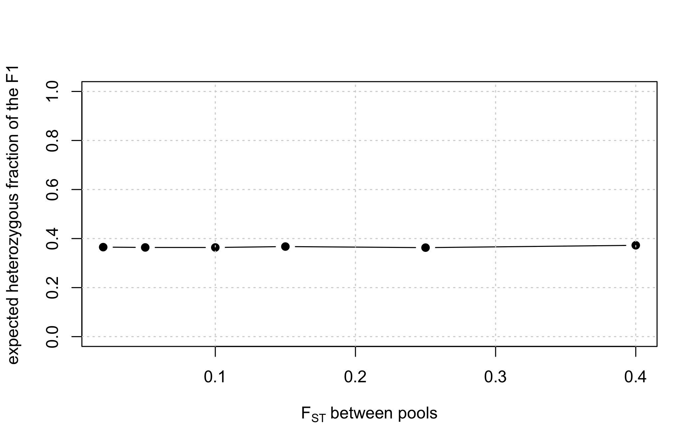
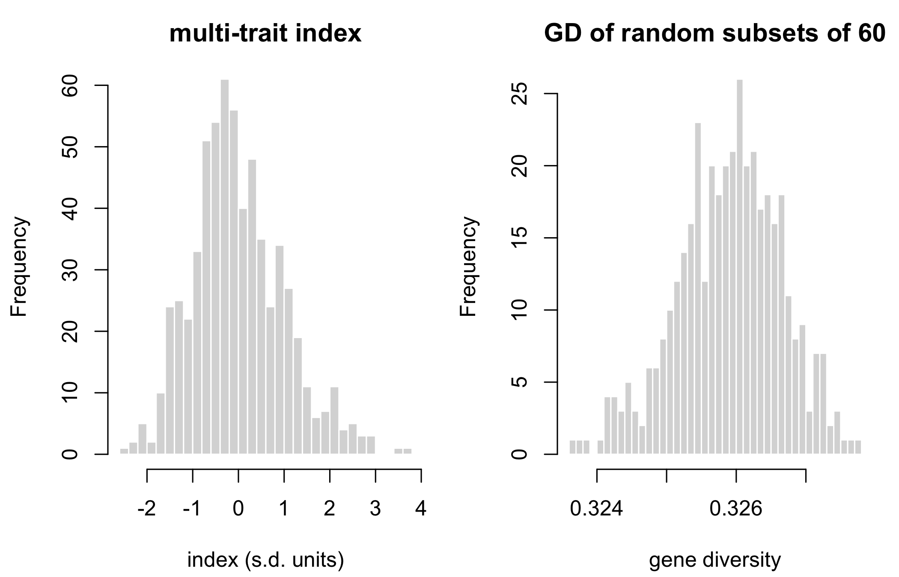

| Object | Shape | Content | Needed for |
|---|---|---|---|
X |
N x m | hybrid marker matrix, values in 0/0.5/1 | every frequency-based metric |
f |
N x N | molecular coancestry of the hybrids | every coancestry-based metric |
hybrids |
N x (3 + n_traits) | hybrid id, the two parent lines, predicted traits | the index, and the line-usage vector |
fL |
L x L, optional | coancestry BETWEEN LINES | only the heterotic-group decomposition |
3 Simulating lines, pools and crosses
Everything downstream of this chapter consumes three objects and knows nothing about where they came from. That is deliberate: it is the seam at which a simulation is swapped for real data, and it is the only place that has to change when it is.
This chapter builds those objects. It also builds the candidate pool the rest of the book selects from, so the choices made here – how divergent the pools are, how the index is constructed – determine what the later chapters have to work with.
3.1 What has to be produced
3.2 Simulating the lines
Two heterotic pools are generated with a Balding-Nichols model. Ancestral allele frequencies are drawn uniform on \([0.05, 0.95]\), then each pool’s frequency at marker \(k\) is drawn as
\[p_{A,k} \sim \text{Beta}\!\left(p_k \frac{1 - F_{ST}}{F_{ST}},\; (1 - p_k) \frac{1 - F_{ST}}{F_{ST}}\right),\]
and independently for pool B. The Beta has mean \(p_k\) and variance \(F_{ST}\, p_k (1 - p_k)\), so the parameter fst in the configuration is the expected between-pool divergence – it is not a proxy for it.
Genotypes are then drawn as \(2 \times \text{Bernoulli}(p)\), which makes every line fully homozygous, as an inbred line should be.
simulate_lines
#> function(cfg) {
#> set.seed(cfg$seed)
#> p_anc <- stats::runif(cfg$m, 0.05, 0.95)
#> bn <- function(p, fst) {
#> stats::rbeta(length(p), p * (1 - fst) / fst, (1 - p) * (1 - fst) / fst)
#> }
#> pA <- bn(p_anc, cfg$fst)
#> pB <- bn(p_anc, cfg$fst)
#>
#> draw <- function(n, p) {
#> matrix(2L * stats::rbinom(n * length(p), 1, rep(p, each = n)), nrow = n)
#> }
#> L <- rbind(draw(cfg$n_pool_A, pA), draw(cfg$n_pool_B, pB))
#> storage.mode(L) <- "double"
#> L
#> }
#> <environment: namespace:hybdiv>L <- simulate_lines(book_cfg)
dim(L)
#> [1] 50 2000
table(as.vector(L[1:5, 1:200]))
#>
#> 0 2
#> 480 520Only 0 and 2 appear: no residual heterozygotes. With real data those must be imputed or dropped before this point, because the hybrid-genotype identity in Chapter 1 assumes homozygous parents.
3.2.1 The divergence knob
fst is the single most consequential parameter in the simulation, because it controls how much heterosis there is to find and therefore how much a diversity constraint can cost. It is worth seeing directly:
fst_grid <- c(0.02, 0.05, 0.10, 0.15, 0.25, 0.40)
div <- vapply(fst_grid, function(fst) {
cfg <- modifyList(book_cfg, list(fst = fst, m = 1500))
Lx <- simulate_lines(cfg)
fL <- molecular_coancestry(Lx / 2)
A <- seq_len(cfg$n_pool_A); B <- cfg$n_pool_A + seq_len(cfg$n_pool_B)
# a hybrid A x B is heterozygous wherever its parents differ
c(between_pool_f = mean(fL[A, B]),
within_pool_f = mean(c(fL[A, A], fL[B, B])),
het_fraction = 1 - mean(fL[A, B]))
}, numeric(3))
d <- data.frame(fst = fst_grid, t(div))
plot(d$fst, d$het_fraction, type = "b", pch = 19, ylim = c(0, 1),
xlab = expression(F[ST]~"between pools"),
ylab = "expected heterozygous fraction of the F1")
grid()
fmt(d)| fst | between_pool_f | within_pool_f | het_fraction |
|---|---|---|---|
| 0.02 | 0.6349 | 0.6564 | 0.3651 |
| 0.05 | 0.6362 | 0.6684 | 0.3638 |
| 0.10 | 0.6364 | 0.6877 | 0.3636 |
| 0.15 | 0.6326 | 0.7052 | 0.3674 |
| 0.25 | 0.6370 | 0.7387 | 0.3630 |
| 0.40 | 0.6274 | 0.7898 | 0.3726 |
More divergent pools give more heterozygous F1 hybrids. That is the heterosis engine, and Chapter 2 is the reason it must be held, not maximised: the same divergence that raises GD_BS is being paid for out of within-pool diversity.
3.3 From lines to hybrids
Every A x B combination is formed. With 25 lines per pool that is 625 candidates; at the production scale of 71 per pool it is 5041.
cfg <- book_cfg
a_ids <- seq_len(cfg$n_pool_A)
b_ids <- cfg$n_pool_A + seq_len(cfg$n_pool_B)
ped <- expand.grid(a = a_ids, b = b_ids)
M <- (L[ped$a, , drop = FALSE] + L[ped$b, , drop = FALSE]) / 2 # 0/1/2
dim(M)
#> [1] 625 2000
head(ped, 3)| a | b |
|---|---|
| 1 | 26 |
| 2 | 26 |
| 3 | 26 |
The factorial structure matters more than it looks. Because every line appears in many candidate hybrids, selecting hybrids is really selecting line usage – and that observation, made precise in Section 10.1, is what makes the whole problem tractable at production scale.
3.4 Predicted traits
Marker effects are drawn correlated across traits, through a Cholesky factor of a fixed correlation matrix, and the predicted values are the centered marker matrix times those effects:
set.seed(cfg$seed + 99)
R <- matrix(c(1, 0.3, -0.3,
0.3, 1, 0.1,
-0.3, 0.1, 1), 3, 3)
vr <- vanraden_G(M)
B <- matrix(rnorm(cfg$m * cfg$n_traits), cfg$m) %*% chol(R)
traits <- scale(vr$Z %*% B)
round(cor(traits), 3)
#> [,1] [,2] [,3]
#> [1,] 1.000 0.259 -0.440
#> [2,] 0.259 1.000 0.049
#> [3,] -0.440 0.049 1.000The realised trait correlations recover the target R, which is the point of the Cholesky step: without it, a multi-trait index would be a weighted sum of independent noise, and the trade-off it induces against diversity would be unrealistically easy.
NoteWhat this simulation deliberately does not model
These predicted values are constructed from known marker effects, so they carry no prediction error. Real GEBVs do. The book therefore treats ctx$index as given throughout, and the reader should read every gain figure as an upper bound on what a real programme would realise. The additive model also carries no dominance, so it cannot express specific combining ability – see the caveats in Chapter 18.
3.5 The two matrices, both built
X <- M / 2
ctx <- build_ctx(X = X, f = molecular_coancestry(X), G = vr$G, traits = traits,
ped = ped, n_lines = nrow(L),
pool = rep(c("A", "B"), c(cfg$n_pool_A, cfg$n_pool_B)),
fL = molecular_coancestry(L / 2), cfg = cfg)
c(N = ctx$N, m = ctx$m, n_lines = ctx$n_lines,
sum_G = sum(ctx$G), min_f = min(ctx$f), max_f = max(ctx$f))
#> N m n_lines sum_G min_f
#> 6.250000e+02 2.000000e+03 5.000000e+01 -4.178879e-11 6.447500e-01
#> max_f
#> 8.317500e-01sum(G) is zero to machine precision and f is inside \([0, 1]\): the two properties from Chapter 1, on this dataset.
The context also freezes two things that must never be recomputed per scenario:
str(ctx[c("p0", "maf_pop", "index")], max.level = 1)
#> List of 3
#> $ p0 : num [1:2000] 0.44 0.3 0.56 0.9 0.12 0.98 0.98 0.7 0.64 0.22 ...
#> $ maf_pop: num [1:2000] 0.44 0.3 0.44 0.1 0.12 0.02 0.02 0.3 0.36 0.22 ...
#> $ index : num [1:625] -0.291 0.498 -0.361 -0.186 -0.348 ...p0 is the candidate-pool allele frequency vector. It is the base against which F_hom and F_drift are measured in Chapter 7, and recomputing it per scenario would silently zero out the historical memory of erosion – the single most common error in applying these metrics.
3.6 The stage-1 contract in one call
All of the above is stage1_simulate():
stage1_build
#> function(X, ped, traits, fL = NULL) {
#> if (max(X) > 1) X <- X / 2 # accepts 0/1/2 or 0/0.5/1 coding
#> stopifnot(nrow(X) == nrow(ped), nrow(X) == nrow(traits))
#>
#> hybrids <- data.frame(
#> hybrid = seq_len(nrow(X)),
#> line_A = as.integer(ped$a),
#> line_B = as.integer(ped$b),
#> traits
#> )
#>
#> list(X = X, f = molecular_coancestry(X), hybrids = hybrids, fL = fL)
#> }
#> <environment: namespace:hybdiv>st1 <- stage1_simulate(book_cfg)
str(st1, max.level = 1)
#> List of 4
#> $ X : num [1:625, 1:2000] 0.5 0.5 0 0 0 0.5 0.5 0 0 0 ...
#> $ f : num [1:625, 1:625] 0.818 0.74 0.743 0.738 0.745 ...
#> $ hybrids:'data.frame': 625 obs. of 6 variables:
#> $ fL : num [1:50, 1:50] 1 0.677 0.692 0.674 0.684 ...
head(st1$hybrids, 3)| hybrid | line_A | line_B | trait1 | trait2 | trait3 |
|---|---|---|---|---|---|
| 1 | 1 | 26 | -0.6880637 | 0.1907069 | 0.0153955 |
| 2 | 2 | 26 | -0.6102738 | -0.0320787 | 1.4661012 |
| 3 | 3 | 26 | -0.3094099 | -0.5013539 | 0.2137806 |
For real data the same function is called with your own matrices:
st1 <- stage1_build(
X = hybrid_markers, # N x m, coded 0/1/2 or 0/0.5/1 (auto-detected)
ped = pedigree, # data.frame with columns a, b
traits = predicted_traits, # N x n_traits
fL = line_coancestry # optional
)stage1_build() detects the marker coding and rescales, so both conventions give an identical result:
tr <- st1$hybrids[, grep("^trait", names(st1$hybrids))]
pd <- data.frame(a = st1$hybrids$line_A, b = st1$hybrids$line_B)
identical(stage1_build(st1$X, pd, tr)$f,
stage1_build(st1$X * 2, pd, tr)$f)
#> [1] TRUE3.7 What the candidate pool looks like
op <- par(mfrow = c(1, 2), mar = c(4.2, 4.2, 2.5, 1))
hist(ctx$index, breaks = 40, col = "grey85", border = "white",
main = "multi-trait index", xlab = "index (s.d. units)")
gd_random <- replicate(400, gene_diversity(sample.int(ctx$N, 60), ctx))
hist(gd_random, breaks = 30, col = "grey85", border = "white",
main = "GD of random subsets of 60", xlab = "gene diversity")
abline(v = gene_diversity(seq_len(ctx$N), ctx), col = "#b2182b", lwd = 2)
par(op)The red line is the gene diversity of the whole pool. It does not sit at the centre of the distribution of random subsets of 60 – it sits above it. That gap is pure sampling, it has nothing to do with selection, and mistaking it for a loss is the subject of Section 9.9.
c(GD_population = gene_diversity(seq_len(ctx$N), ctx),
GD_random_60 = mean(gd_random),
apparent_loss_pct = 100 * (gene_diversity(seq_len(ctx$N), ctx) - mean(gd_random)) /
gene_diversity(seq_len(ctx$N), ctx))
#> GD_population GD_random_60 apparent_loss_pct
#> 0.3280928 0.3259023 0.6676555